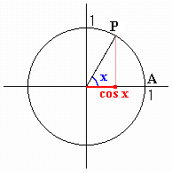

|
The figure shows a definition of cosine function. The unit circle is the circle with its center at the origin and a radius of 1. Angle x is formed by rotating OA about the origin to OP. Then the x-coordinate of point P is cos x. |  |
|
Input an angle(degrees), then press enter key or click "Start" button. |
Using the applet, find angle x that satisfies
|